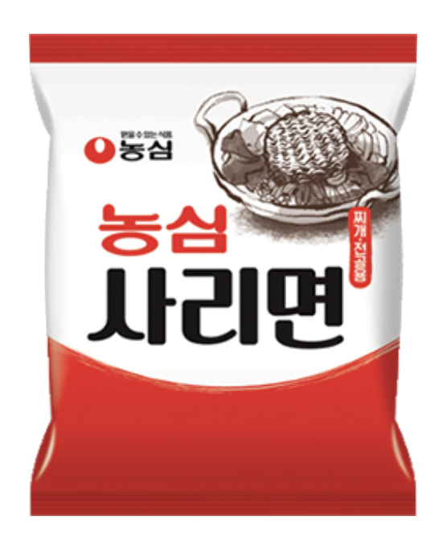
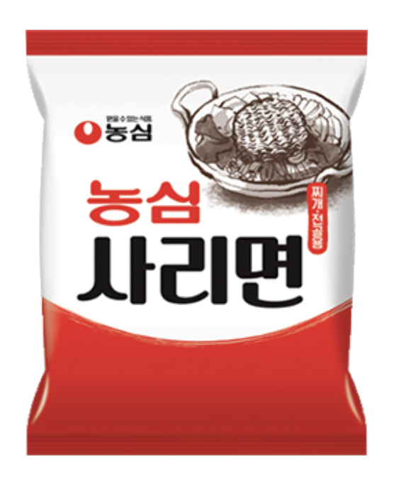

Hooroorook
Weight: 92g
Year of Release: 2008
Rating: 1.8/5
Notable flavors: flour paste noodles, anchovy noodles
I personally think this is a bit bland. It's not my favorite, to be honest. This product might be preferable for those who prefer more traditional noodle options or like less spicy noodles.

 
